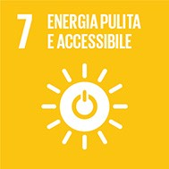
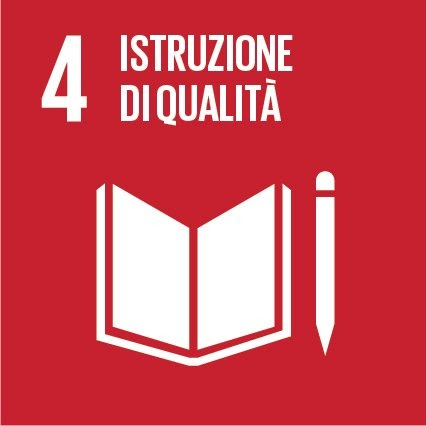

Obiettivo 7 ONU
Ridurre a 0 l’utilizzo delle energie non rinnovabili
e estendere a tutto il mondo l’utilizzo di energie rinnovabili
(elettricità, energia solare; ecc…)
a un prezzo accessibile.
Cosa possono fare i Governi?
Per raggiungere questo obiettivo gli Stati hanno stabilito:
-
Garantire a tutti l’accesso a servizi energetici che siano convenienti, affidabili e moderni, attraverso nuove infrastrutture e tecnologie migliori.
-
Promuovere l’efficienza energetica, sviluppando più in fretta tecnologie in grado di ridurre gli sprechi di energia.
-
Aumentare a livello globale l’uso di energia da fonti rinnovabili rispetto ad altre fonti energetiche.
-
Lavorare insieme per la ricerca e sviluppo di risorse rinnovabili e altra energia pulita.

Obiettivo 4
Garantire un'istruzione di qualità inclusiva ed equa e promuovere opportunità di apprendimento continuo per tutti.
La comunità internazionale ricorda l'importanza di un'istruzione e di una formazione di qualità
per migliorare le condizioni di vita delle persone, delle comunità e delle società.
Cosa possono fare i governi?
Per raggiungere questo obiettivo gli Stati hanno stabilito:
-
Garantire l’istruzione per tutti, a cominciare dall’istruzione di base.
-
Fornire maggiori opportunità di formazione tecnica e professionale a giovani e adulti, in modo che siano in grado di ottenere lavori migliori.
-
Porre fine, nell’istruzione, alla disparità tra uomini e donne e alle altre forme di disuguaglianza che colpiscono bambini con disabilità, popolazioni indigene e chi è vittima di conflitti.
-
Migliorare le strutture scolastiche per offrire un ambiente sicuro e inclusivo per tutti.
-
Aumentare il numero di borse di studio per la formazione professionale e tecnica, nel paese di origine o all’estero.
-
Aumentare il numero di insegnanti formati e qualificati.
-
Promuovere l’educazione allo sviluppo sostenibile.
